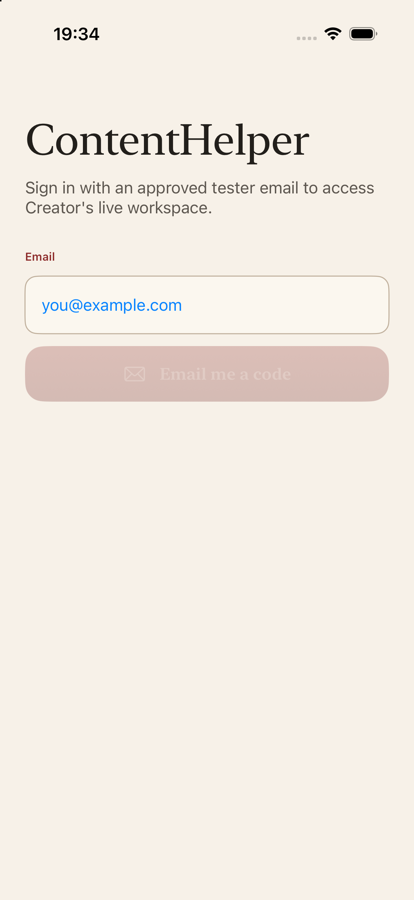
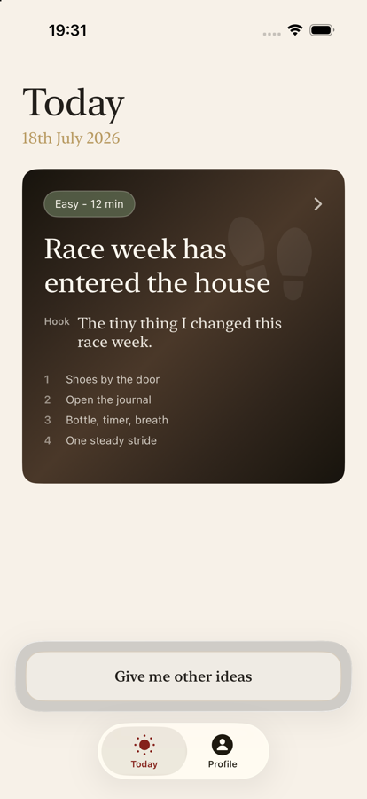
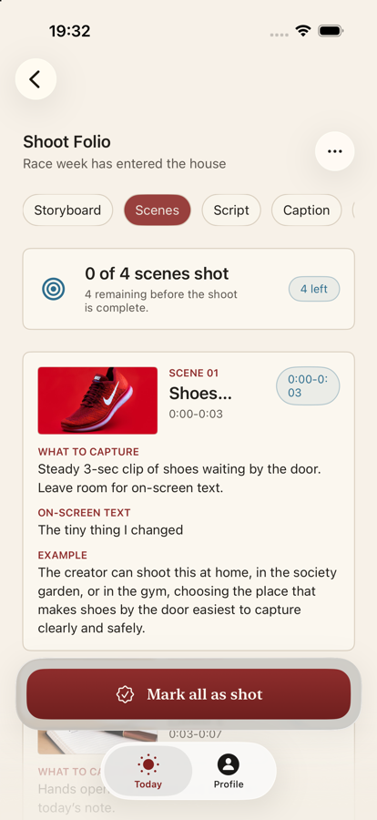
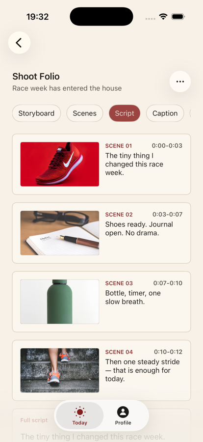
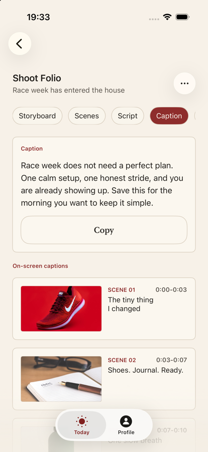
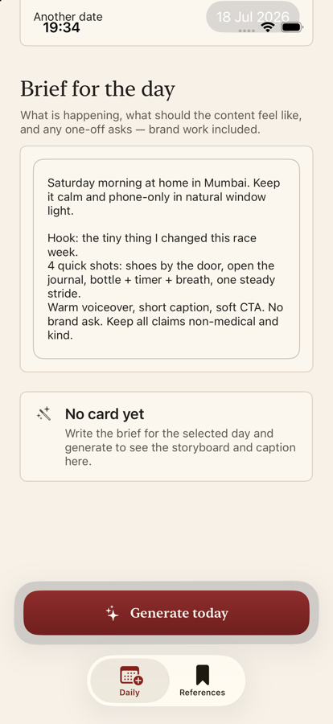
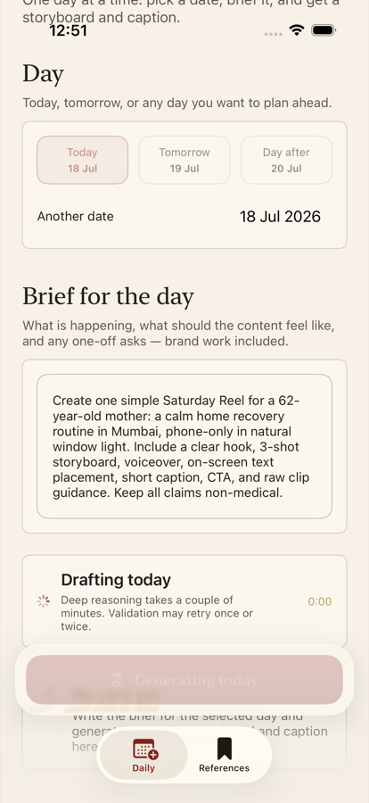

Open the Today tab
You should see today’s date and one big card for the reel. If the card is there, you’re ready.
Short steps for filming today’s reel, or preparing the day for someone else.
Everyone starts here
Do this once. After that, you mostly just open the app each day.
Open the TestFlight app on your iPhone. Find ContentHelper and install it. Make sure it says build 26 (or newer, if you were told to update).
Tap the ContentHelper icon. The first open finishes the install.
Type the email that was approved for you. Tap Email me a code. Check that inbox (and Spam). Enter the 6-digit code, then tap Sign in.
You do not need a pairing code. Just the email code.

Creator path
Your job is simple: open Today, follow the Shoot Folio, and film.
You should see today’s date and one big card for the reel. If the card is there, you’re ready.

That opens Shoot Folio — your filming packet for the day.
The top tabs are your guide. Storyboard shows the picture plan with times for each shot.
Storyboard → Scenes → Script → Caption → Audio

On Scenes, each shot has a picture, a time range, and clear “what to capture” notes.

Open Script for the words to say. Open Caption when you’re ready to post — tap Copy for Instagram.

ContentHelper tells you what to shoot. You still record and edit in Instagram (or your usual camera app).
In Scenes, tap Mark all as shot when you’re done filming. Later you can Mark as posted.
On Today, tap Give me other ideas. You can use a short backup, a caption-only post, save for tomorrow, or skip today.
A completed day just means you made a choice. You do not have to post every day.
You do not need to research trends, write prompts, or manage a calendar. If something looks wrong, tell the Manager in one short note.
Manager path
You prepare one day at a time, then publish so Creator sees it on Today.
Go to the Profile tab. Tap the arrow on Manager tools. You’ll see Daily and References.
Pick today, tomorrow, or another day you want to plan ahead.
In your own words, say what today’s reel should be about — location, mood, shots, and anything to avoid.
The brief cannot be empty. A few clear sentences are enough.

Wait while ContentHelper builds the day. You’ll get a storyboard and caption. Picture guides are created with the day, so Creator will see the same visuals on Today.

Check storyboard, scenes, script, and caption. If the day is weak, tap Generate again.
Your Daily preview should match what Creator will see on Today.
When ready, tap Publish selected day. If the date is today, Creator should see the card after they open or refresh the app.
Confirm Creator has a useful Today card. Only step in if the card is wrong or missing.
Generated days stay under Generated days in Daily. Nothing goes live for Creator until you publish.
Quick help
Try these first. Keep it simple.
Check Spam / Junk. Confirm the email spelling. Wait a minute, then ask for a new code. If it still fails, ask the owner to resend access for your email.
Only approved emails can sign in. Ask the owner to approve your email, then try again.
Open TestFlight → ContentHelper → update to build 26 (or the build you were told to use). Then open the app once.
Usually the day has not been published yet. Ask the Manager to open Daily, choose today’s date, and tap Publish selected day. Then reopen ContentHelper.
Make sure you are in Manager tools, the day brief is not empty, and you are not already generating that date.
Close the app and open it again. If it still looks wrong, send one short note to the other person with what you see on screen.